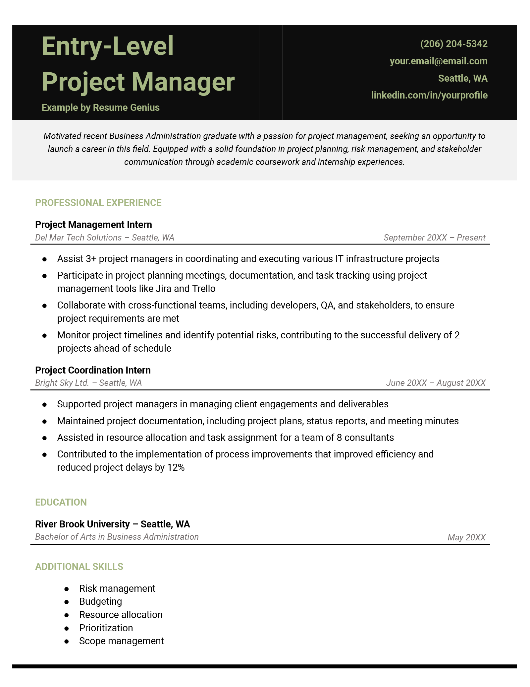
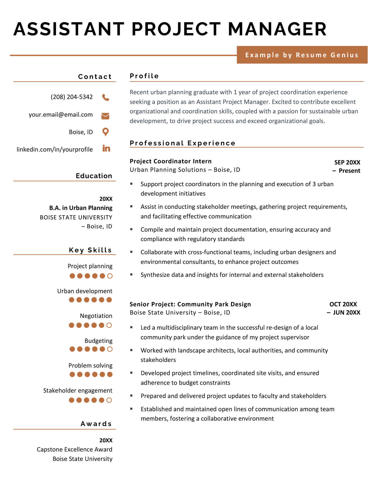

12 Project Management Resume Examples & Keywords for 2024 (New Data)
We collected data from real job postings and identified the 10 most sought-after skills that will give your resume a competitive edge. Plus, we’ve put together 12 project manager resume examples and an expert writing guide to help you write a job-winning application.
📅 August 1, 2024

Project management resume template
[Your Name]
[Your Address], New York, NY
[Your Email Address] | [Your Phone Number]
[LinkedIn Profile] (optional)
Career Objective
Project Manager with 2+ years of experience managing multi-million dollar construction projects, coordinating a team of 90+ subcontractors, and performing budget allocation and analysis. PMI Agile Certified Practitioner aiming to apply my experience and expertise as [Company Name]’s newest project manager. Possess a B.A. in Construction Management and knowledge of BIM Software, AutoCAD, and Revit.
Skills
Hard Skills:
- Microsoft Office Suite (Word, Excel, PowerPoint, Outlook)
- Calendar Management
- Data Entry
- Document Preparation
- Travel Coordination
- Database Management (CRM tools)
- Financial Reporting and Budgeting
- Office Equipment Management
Professional Experience
Angel Builders
Project Manager | Cambridge, MA | May 20XX – Present
- Manage project budget of $2M+ and ensure company obtains the best possible pricing; determine and minimize risk in buyout processes, reducing costs by 8% annually.
- Oversee and analyze prime project buyout of $3 million, accounting for savings and contingencies.
- Write and distribute bid packages amounting to 8% of total production costs that clearly define the scope and provisions of potential contracts.
- Ensure that the project team understands all aspects of the prime contract relating to their respective responsibilities, and demonstrate a thorough understanding of the prime contract checklist and organizational structure.
- Negotiate, analyze, and prepare order agreements, subcontracts, and cost control budgets.
Iron Fit Gym
Assistant Manager | Cambridge, MA | August 20XX – April 20XX
- Managed, directed, and prioritized gym operational budget of $250,000, staying within budget.
- Overhauled sales process and systems to achieve revenue goals, hitting targets of 17% revenue increase annually.
- Worked to provide strategic, operational, and fiscal leadership while working to reach the company’s long-term goals and maintain organizational vision.
- Directed the hiring, training, and scheduling of all gym-level associates by an intermediary, totaling 80+.
Education
PMI Agile Certified Practitioner (Online Course) April 2, 20XX
Tufts University | B.A Construction Management | Medford, MA, 20XX
Awards
- Project Manager of the Year, Angel Builders 20XX
The most in-demand project management skills (from job ads)
Hiring managers look for project managers whose resumes align with the skills emphasized in their job ads. To help you identify the most relevant skills to highlight on your resume, we analyzed project manager job listings from multiple job search platforms. Our research reveals that these 10 keywords appear most often in project manager job postings:

Job-specific resume examples for project managers
Here are some more resume examples to help inspire you when writing your own:
Entry-level project manager resume
Example Highlights
- Strong introduction: The resume objective highlights the candidate’s key competencies and immediate career goals to give employers a quick and easy-to-read introduction to the candidate.
- Emphasis on experience: While the candidate lacks formal work experience, they elaborated on their internship experience and used hard numbers to show hiring managers what they can achieve if hired.
Assistant project manager resume
While not yet leading initiatives from end to end, an assistant project manager plays a crucial supporting role. This resume example highlights how to position yourself for an assistant project manager position.
Example Highlights
- Emphasizes key skills: The candidate includes some of the most in-demand skills for project managers, like teamwork, documentation, and communication skills.
- Interesting layout: The resume’s design is unique and well-organized, with eye-catching pops of color that add visual interest without being distracting.
Senior project manager resume
A senior project manager resume showcases your expertise in all phases of the project life cycle, from initial planning to final delivery. For example:

Example Highlights
- Includes keywords: The candidate lists some of the top project management skills employers are looking for based on our data, like problem solving and documentation.
- Lists a certification: The candidate includes an additional certification, demonstrating a commitment to continuous learning — something that impresses hiring managers.
Average project manager salaries in the US
The following table includes information from O*NET Resource Center by the U.S. Department of Labor, Employment and Training Administration (USDOL/ETA). Used under the CC BY 4.0 license. The data is presented based on the top states in the USA.


Make a Resume in Minutes
Pick your template, fill in a few details, and our builder will do the rest.